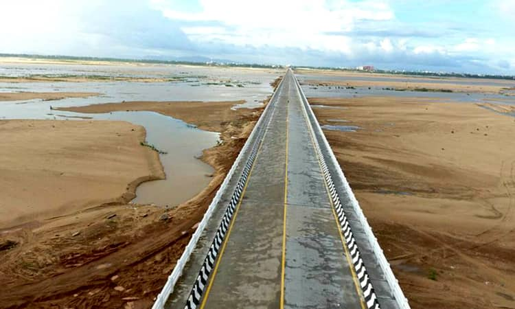

Bridges are a crucial part of a country’s infrastructure. It ensures that the people get to places that were once not reachable and increases the flow of economy. Bridges in India are feats of engineering marvel that deserve an international recognition. These bridges provide a connectivity service for people looking to commute from one place to the other. India is home to some of the most stunning, strong and well-built bridges in the world.
Check out these 31 Longest Bridge in India:
- Mumbai Trans Harbour Link Bridge (21,800 m)
- Kachchi Dargah Bidupur Ganga Bridge (9,760 m)
- Bhupen Hazarika Setu (9,150 m)
- Dibang River Bridge (6,200 m)
- Mahatma Gandhi Setu (5,750 m)
- Bandra-Worli Sea Link (5,600 m)
- Godavari Fourth Bridge (5,062 m)
- Bogibeel Bridge (4,940 m)
- Vikramshila Bridge (4,700 m)
- Vembanad Rail Bridge (4,620 m)
- Digha Sonpur Bridge (4,556 m)
- Arrah Chhapra Bridge (4,350 m)
- Godavari Bridge (4,100 m)
- Munger Ganga Bridge (3,750 m)
- Jawahar Setu (3,061 m)
- Chahlari Ghat Bridge (3,260 m)
- Nehru Setu (3,059 m)
- Kolia Bhomora Bridge (3,015 m)
- Daudnagar Bridge (3,000 m)
- Korthi Kolhar Bridge (3,000 m)
- Penumudi Puligadda Bridge (2,950 m)
- Netaji Subhas Chandra Bose Bridge (2,880 m)
- Godavari Arch Bridge (2,745 m)
- Joyee Setu (2,709 m)
- Kanaka Durga Varadhi (2,600 m)
- Farakka Barrage (2,304 m)
- Nar Narayan Setu (2,284 m)
- Baluaha Ghat Bridge (2,280 m)
- Mahanadi Rail Bridge (2,100 m)
- Pamban Bridge (2,065 m)
- Vijay Ghat Bridge (2,000 m)
1. Mumbai Trans Harbour Link Bridge (21,800 m)
Currently under construction with the prospect of opening for public usage in September 2023, the Mumbai Trans Harbour Link Bridge is a massive 21 km long, 6 Lane Road Bridge. This will be connecting Mumbai city with its satellite city of Navi Mumbai. On its completion it would be the longest sea bridge in India. The bridge journey will start off from Sewri in South Mumbai and go on till Chirle near Nhava Sheva via the thane creek which is located north of the Elephanta islands. Although the bridge construction was on halt due to the COVID-19 pandemic, it is currently being constructed under full swing and is expected to open up sooner than ever.
- Total length: 21,800 m
- Opening: September 2023
- Construction started: 24 April 2018
- Location: Mumbai Metropolitan Area
- Owner: MMRDA
- Ends: Chirle, Uran, Navi Mumbai
- Material: Concrete and steel
2. Kachchi Dargah Bidupur Ganga Bridge (9,760 m)
The Kacchi Dargah Bidupur Bridge spans across the holy Ganga River and connects Kacchi Dargah in Patna to Bidupur in Hajipur in the eastern state of Bihar. Once the construction is complete by 2023, the bridge will prove to be a very economical and an easy walkway connecting northern and southern ends of Bihar. It will also come in handy in connecting two major national highways of NH 32 and NH 33. The bridge will substantially reduce the excess load of vehicles and transportation at the Mahatma Gandhi Bridge in Patna. The primary intention for the bridge being built is for it to connect Arrah and Chhapra.
- Address: H7QX+9PV, Kacchi Dargah – Bidupur Bridge, Jamalpur Chak Shanker Ganga Pra, Bihar 844508
- Total length: 9,760 m
- Location: Patna
- Construction started: 31 January 2016
3. Bhupen Hazarika Setu (9,150 m)
Connecting Assam with its neighbouring state of Arunachal Pradesh, the Bhupen Hazarika Setu which is also known as Dhola Sadiya Bridge is 9.15 kms long. This is also the longest bridge in India and spans across the Lohit River which is one of the major tributaries of the holy Brahmaputra River. The bridge is also the first permanent connection between northern Assam and Eastern Arunachal Pradesh. Completed in 2017 and inaugurated by our honourable Prime Minister Narmada Modi, this bridge is surrounded by an absolutely stunning and expansive natural landscape.
- Total Length: 9,150 m
- Bodies of Water: Brahmaputra, Lohit
- Location: Sadiya
- Opened: 26 May 2017
- Construction Started: November 2011
- Bridge Type: Beam bridge
- Width: 13 m
4. Dibang River Bridge (6,200 m)
Dibang River Bridge is a 6.2 km long all weather bridge connecting the Dambuk and Roing parts of eastern Arunachal Pradesh. The beam bridge takes you over the Dibang River which is an upstream tributary river of the iconic Brahmaputra River. This 2nd longest bridge of India was completed and opened for travellers during 2018 as a part of the NH13 trans-Arunachal highway project. The bridge spans across the lower Dibang Valley region of the state and it is not only convenient for tourists and locals but it is also strategically built for the convenience of army and military Personnels to keep anti-national activities at bay.
- Total Length: 6,200 m
- Opened: 2018
- Location: Bomjir
- Construction Started: April 2013
- Constructed by: Navayuga Engineering Company Limited
5. Mahatma Gandhi Setu (5,750 m)
Also referred to as Gandhi Setu or Ganga Setu, and occupying the places for being the 3rd longest bridge in India, this bridge is 5.7 kms long. Inaugurated in 1982 by honourable prime minister, Indira Gandhi, the bridge goes over the holy Ganga River connecting Patna in the south and Hajipur in the north. Built by Gammon India, over a period of 10 years, the bridge was built with the intention of connecting the northern end of Bihar to the rest of the state.
- Total Length: 5,750 m
- Location: Patna
- Construction started: 1972
- Body of water: Ganges
- Opened: May 1982
- Bridge type: Girder Bridge
- Longest span: 121 m
6. Bandra-Worli Sea Link (5,600 m)
Bandra Worli Sea Link is probably one of the most instagrammable sea bridges in India. Located in the city of dreams, Mumbai, the Bandra-Worli Sea Link is 5.6 km long and gained popularity for being the 4th longest bridge in India. The sea link is a blessing in disguise for the daily commuters in Mumbai as it majorly reduces travel time between Bandra and Worli from half an hour to just 10 minutes. Also referred to as Rajiv Gandhi Bridge the construction involved not only India but also a skilled set of workforce from abroad like Switzerland, Egypt, China, Canada etc.
- Architect: Seshadri Srinivasan
- Construction started: 2000
- Opened: 30 June 2009
- Total length: 5,600 m
- Location: Bandra West, Worli
- Bridge type: Cable-stayed bridge, Viaduct
- Clearance below: 20 m
7. Godavari Fourth Bridge (5,062 m)
Built over the Godavari River in Rajahmundry, this unique dual bridge works perfectly in connecting the two cities of Kovvur in east Godavari to Diwancheruvu Junction in Rajamahendravaram. The bridge has worked like a charm in cutting down the travel time from Kolkata to Chennai by at least 150 kms. This bridge is 5 kms long and the engineering design can be credited to the company Gammon India. The foundation stone for the bridge was laid in 2009 and it was finally opened for public usage in 2015.
- Address: 2QR3+63X, Godavari Fourth Bridge, Kovvur, Andhra Pradesh 534350
- Total length: 5,062 m
- Location: Rajamahendravaram
- Opened: 2015
- Engineering design by: Gammon India
- Piers in water: 81
8. Bogibeel Bridge (4,940 m)
Located in the Dibrugarh district of Assam, Bogibeel combines road and Rail Bridge over the mighty Brahmaputra River. Other than being the 5th longest bridge in India, it is also the longest road-cum-rail bridge that runs for a length of over 4.9 kms. Due its location in the notorious earthquake-prone zone of Northeast India, the Bogibeel Bridge is India’s first bridge to have fully welded steel concrete support beams that can stand earthquakes up to the scale of 7 on the Richter scale.
- Address: CQ55+XFF, Assam 786008
- Total length: 4,940 m
- Body of water: Brahmaputra
- Location: Dibrugarh, Dhemaji
- Construction started: 21 April 2002
- Bridge type: Truss bridge
- Materials: Steel, Concrete
- Longest span: 125 m
9. Vikramshila Bridge (4,700 m)
This 6th longest bridge in India across the Ganga River is situated near Bhagalpur in Bihar. The bridge is 4.7 km long and this massive two-lane bridge functions as a connector between NH 33 and NH 31. The bridge extends from the Barari Ghat on the Bhagalpur side of the southern bank of Ganges and goes on till the naugachia on the northern end. This has worked as a charm in substantially reducing the travel time between Bhagalpur and other places on the other side of the Ganges. Currently, many people have started using the Vikramshila Bridge so much that it is experiencing congestion and people are demanding another bridge to be built parallel to it.
- Total Length: 4,700 m
- Opened: 2001
- Location: Bhagalpur
- Toll: For Heavy vehicle and four wheeler
- Material: Concrete and Iron
- Daily traffic: Two way
10. Vembanad Rail Bridge (4,620 m)
Connecting Edappally and Vallarpadam and opened for function in 2010, Vembanad Rail Bridge is the 2nd longest railway bridge in India. The bridge stretches out at a length of 4.62 km and is one of the most wonderful bridges in Kochi, Kerala. Built by the Rail Vikas Nigam of Chennai, this railway line runs 3 kms parallel to the old existing track until Vaduthala. The railway track also passes through 3 islands and can be ranked as one of the most scenic railway routes in India. Since 80% of the bridge is constructed over water, the train ride is extremely rewarding.
- Address: 2745+95W, Vallarpadam, Kochi, Kerala
- Location: Kochi
- Construction started: June 2007
- Total length: 4,620 m
- Bridge type: Beam bridge
- Opened: 11 February 2011
- Width: 5 m
11. Digha Sonpur Bridge (4,556 m)
The Digha Sonpur Bridge is a rail cum Road Bridge connecting the Digha Ghat in Patna and Pahleja Ghat in Sonpur. The Digha Sonpur Bridge is a blessing for the commuters as well as the locals as it successfully connects the northern and southern end of the huge state of Bihar. This 4.5 km long bridge is also known for being the 2nrd longest railway cum Road Bridge in India. The bridge is named after the bygone freedom fighter Jayaprakash Narayan. This massive bridge across the Ganges was opened for function in 2016 and continues to remain one of the most important modes of transportation.
- Total length: 4,556 m
- Longest span: 123 m
- Opened: 3 February 2016
- Width: 10 m
- Construction started: 2003
- Crosses: Ganges
- Location: Patna, Digha
12. Arrah Chhapra Bridge (4,350 m)
Also known as the Veer Kunwar Singh Setu, the Arrah Chhapra Bridge is the longest multi-span extradosed bridge in the world with the main bridge being almost 2 km long. The bridge spans over the gushing river below and connects Arrah in Bhojpur district to Chhapra in Saran district of Bihar. Opened for public use in 2017, the bridge provides another strong and much needed link between the northern and southern ends of Bihar. The bridge substantially cuts down the travel time between the two places from 130 kms to 40 kms.
- Location: Arrah
- Body of water: Ganges
- Construction started: July 2010
- Total length: 4,350 m
- Bridge type: Extradosed bridge
- Opened: 11 June 2017
- Longest span: 120 m
13. Godavari Bridge (4,100 m)
Spanning across the huge Godavari River, the Godavari Bridge is a truss bridge and is famed for being India’s 3rd longest rail cum Road Bridge. Situated in Rajahmundry in Andhra Pradesh, the bridge or the Setu, is 4 kms long and many people can recognise it to be similar to the Grafton bridge of Australia. The bridge is an addition to the Godavari arch bridge, which has been widely used to represent Rajahmundry in arts, media and culture.
- Longest span:5 metres (300 ft)
- of spans: 27
- Total length:1 kilometers (2.5 mi)
- Opened: 16 August 1974
14. Munger Ganga Bridge (3,750 m)
This rail cum Road Bridge that spans over the holy Ganga River in Bihar is dedicated to the first chief minister of Bihar, Shri Krishna Singh. As the name suggests, the bridge connects Munger district to a number of other districts in northern end of Bihar. The bridge is 3.7 km long and is located just 60 kms downstream from Rajendra Setu and 43 kms upstream of Vikramshila Bridge. The bridge functions as a link between NH 33 and NH 31. It also connects the districts of Begusarai with Khagaria. The construction work for the bridge was then inaugurated by the then honourable Prime Minister, Late Atal Bihari Vajpayee in 2002 through video conference.
- Opened: 12 March 2016
- Location: Munger
- Construction started: 2002
- Total length: 3,750 m
- Body of water: Ganges
- Longest span: 124 m
- Width: 12 m
15. Jawahar Setu (3,061 m)

Spanning across the Son River is the 3 km long Jawahar Setu Bridge. The bridge connects Dehri-on-son with Son Nagar in the state of Bihar. As the name suggests this bridge is named after the first prime minister of India, Jawaharlal Nehru. Built by gammon India from 1963 to 65, the bridge carries the grand trunk road or NH2. The bridge is not only helpful in connecting two places but it is also a very picturesque spot especially during the monsoon months.
- Address: V6Q8+J3C, Dehri, Son Nagar, Bihar
- Location: Dehri
- Total length: 3,061 m
- Opened: 1965
16. Chahlari Ghat Bridge (3,260 m)
Also commonly referred to as the Chahlari Setu, the Chahlari Ghat Bridge runs over the river ghagra connecting Bahraich in the east and Sitapur in the west in the state of Uttar Pradesh. The 3.2 km long bridge is not just the 10th longest bridge in India but it is also the longest road bridge over the river in UP. The Ghat Bridge is a direct result of the efforts put in place by the famous socialist, Mukhtar Anis who was also lovingly referred to as Ganjer Ke Gandhi.
- Address: G8VV+XRW, SH 30B, Sisaiya Churaman, Uttar Pradesh 271825
- Location: Bahraich
- Total length: 3,260 m
- Construction started: 2006
- Opened: February 2017
- Clearance below: 265 m
- Width: 10 m
- Materials: Concrete, Steel
17. Nehru Setu (3,059 m)
Nehru Setu is a 3 km long railway bridge across the Son River in Bihar. It is another mode of connection between Dehri-on-sone and Son Nagar. The Nehru Setu runs parallel to Jawahar Setu which is of the same length but only caters to road traffic. The bridge is extremely strong all thanks to the marvellous feat of engineering. It is constructed using 93 stone pillars on top of which girders rest. The main line of the railway bridge crosses over the Koilwar Bridge and the Dehri son Nagar Bridge accommodates the grand chord line.
- Address: Son Nagar, Dehri, Bihar 824112
- Location: Dehri
- Total length: 3,059 m
- Opened: 27 February 1900
- Longest span: 32 m
- of spans: 93
18. Kolia Bhomora Bridge (3,015 m)
Built in 1987, the bridge is 3 kms long and is often referred to as the Kolia Bhomora Setu. The bridge is a long prestressed concrete road bridge on NH 715 over the Brahmaputra River. The bridge connects Tezpur in Sonitpur district from the northern bank to Kaliabor in the district of Nagaon from the southern bank. The bridge is named after the Ahom general Kolia Bhomora Phukan. The bridge is very well maintained by the authorities and has managed traffic conditions in the state.
- Opened: 1987
- Total length: 3,015 m
- Longest span: 120 m
- Construction started: 1981
- Location: Tezpur
- of spans: 24
19. Daudnagar Bridge (3,000 m)
Sone River has multiple railways as well as road bridges running on top of it to increase connectivity. One such bridge is the 3 km long Daudnagar Bridge. The bridge connects Daudnagar in Aurangabad district to Nasriganj in Rohtas district. Located in the district of Aurangabad, is a strong and very economical 4-lane bridge, that cost a thousand crore rupees for construction. The building of the bridge was done to enable the locals commute better from one place to the other.
- Address: 29QF+949, Daudnagar – Nasariganj Rd, Atimiganj, Bihar 821310
- Location: Daudnagar
- Total Length: 3,000 m
- Opened: February 16, 2019
20. Korthi Kolhar Bridge (3,000 m)
Korthi Kolhar Bridge is constructed on top of the holy Krishna River connecting the districts of Bijapur and Bagalkot. Built on NH 218 in the culturally active state of Karnataka, the bridge offers a stunning driving experience on the backwaters of Almatti Dam. Ranking among one of the top 20 longest river bridges in India, the bridge crosses the Krishna River at a length of 25 kms ahead. Built in and opened for operation in 2006, the bridge is relatively new as compared to its counterpart.
- Location: Bijapur
- Total Length: 3,000 m
- Opened: 2006
21. Penumudi Puligadda Bridge (2,950 m)
Located on the holy Krishna River on NH 214, the bridge has been operational ever since 2006. It spans across the river from Penumudi in Guntur, to Puligadda in Krishna district where it draws its name from. The bridge is 2.95 km long and is of great convenience to the locals and commuters. Other than the amazing bridge, people can savour some of the most stunning sights of the surroundings. You can go there for some casual long-drive experiences. It plays a crucial role for commuting, business and transportation.
- Address: 2VQR+R5F, Penumudi – Puligadda Bridge, Andhra Pradesh 522265
- Total Length: 2,950 m
- Location: Andhra Pradesh
- Construction cost: ₹71 crore (US$8.9 million)
- Constructed by: Navayuga Engineering Company Ltd
22. Netaji Subhas Chandra Bose Bridge (2,880 m)

Built over the river of Kathajodi and connecting Belleview Point to Trisulia, this 2.8 km long bridge or Setu is located in Odisha. Famous for being the longest bridge in Odisha, and inaugurated by Naveen Patnaik, this is the very first lane bridge in Odisha which has also substantially reduced the travel time between Bhubaneswar and Cuttack by 12 kms. Named after Netaji Subhash Chandra Bose, who was born and brought up in Cuttack, the bridge also eases up the traffic congestion on NH 16.
- Address: CRVV+R85, Barang Rd, Trisulia, Odisha 754005
- Bodies of water: Kathajodi River, Mahanadi River
- Bridge type: Girder Bridge
- Total length: 2,880 m
- Longest span: 45 m
- Materials: Steel, Concrete
- Construction end: 2017
- Width: 15 m
23. Godavari Arch Bridge (2,745 m)
Arching its way above the mighty Godavari River, the Godavari arch bridge is a bowstring girder bridge. This arch bridge is famous for being the longest prestressed concrete arch bridge in Asia. Built by the Indian railways and opened for use in 1997, the bridge is constructed in the part of Godavari where it enters into the deltaic reach just before discharging into the sea, 60 kms ahead. The Godavari arch bridge was built as a replacement for the Havelock Bridge which was unusable.
- Location: Rajamahendravaram
- Opened: 12 March 1997
- Construction started: 1991
- Total length: 2,745 m
- Body of water: Godavari River
- Bridge type: Tied-arch bridge
- Longest span: 98 m
24. Joyee Setu (2,709 m)
Joyee Setu or the Joyee Bridge is the longest road river bridge in West Bengal. Connecting Haldibari with Mekhliganj town in Cooch Behar, the bridge was recently opened for public use from 2021. Built over the Teesta River, the bridge covers a distance of 4.8 km because of which it has also earned the place for being the longest river bridge in West Bengal. Its opening has now substantially reduced the previous travel time of 70kms between Haldibari and Mekhliganj to just 15kms. The foundation for the bridge was laid in 2015 and is currently being maintained by the state public works department.
- Address: 9W22+8FQ, Helapakri Rd, Mekliganj, West Bengal 735304
- Total length: 2,709 m
- Crosses: Teesta River
- Opened: 1 February 2021
25. Kanaka Durga Varadhi (2,600 m)
Spanning across the holy Krishna River, this Kanaka Durga Varadhi Bridge is a 2.2 km long beam bridge. Famous as the 3rd longest bridge in Andhra Pradesh and built across the Godavari River, this bridge connects Machilipatnam with Hyderabad. Its construction was followed by an old barrage that served and fulfilled the transportation needs of Vijayawada. The bridge construction was started off in 2012 by NHAI to ease the flow of traffic towards Hyderabad. Currently, some beautification is also going on under the bridge to make it more appealing to look at for everyone.
- Address: FJVG+9J8, Kotikalapudi – Modepalli Rd, Vijayawada, Andhra Pradesh 520013
- Opened: 1995
- Location: Vijayawada
- Total length: 2,600 m
- Longest span: 34 m
- Bridge type: Beam Bridge
26. Farakka Barrage (2,304 m)
Crossing right above the holy Ganga River, the Farakka Bridge is a barrage located in the district of Murshidabad. Just 18 kms away from the border of Bangladesh this bridge was opened for public usage in 1975. The bridge spans a distance of 2.3 kms and was constructed by the Hindustan construction company. The barrage serves water to the Farakka super thermal power station. The main purpose for the construction of this bridge was to divert an adequate quantity of Ganga waters.
- Opened: 21 April 1975
- Length: 2,304 metres (7,559 ft)
- Location: Malda & Murshidabad, West Bengal, India
- Construction cost: ₹156.25 crore
27. Nar Narayan Setu (2,284 m)
The Nar Narayan Setu on top of the Brahmaputra River is the 3rd bridge to have been constructed over the river. This is a double-decked bridge where the lower deck is a railway line and the upper deck is a road. This 2.2 km long bridge connects Jogighopa to the district of Goalpara. Inaugurated in 1998 by former late honourable Prime Minister Atal Bihari Vajpayee. The Setu is located on NH 17 the bridge is designed in the style of a traditional truss bridge and is named after the 16th century Koch king Nar Narayan.
- Address: 6H25+FWV, Naranarayan Setu, Pancharatna, Assam 783101
- Location: Jogighopa
- Opened: 15 April 1998
- Body of water: Brahmaputra
- Total length: 2,284 m
- Bridge type: Truss bridge
28. Baluaha Ghat Bridge (2,280 m)
Situated in Chandauli at Baluaghat, Varanasi, the bridge is constructed about 200 metres above the gushing river. Offering stunning views of the river, the bridge seamlessly connects Chandauli to Varanasi. With the Ganga River flowing under the bridge the bridge has cut down on travel time majorly among regular travellers. Opened for the public in 2008, there are boat services available as well where people can also carry their two-wheelers to cross the river.
- Location: Saharsa, Bihar
- Total Length: 2,280 m
- Opened: 2008
29. Mahanadi Rail Bridge (2,100 m)
Located in Cuttack, Odisha, the Mahanadi rail bridge is 2.1 km long and was opened for service as early as 1899. The bridge consists of 64 spans across 100 feet each. It is the perfect place to go for a drive, clear out your mind and just have some peaceful time with the gushing Mahanadi River on both sides. It is a wonderful sight to behold. The bridge is truly an engineering marvel as it is smartly built to withstand earthquakes and the train can even travel through going up to a speed of 160 kms per hour.
- Address: FWM5+7XR, Mahanadi River, Cuttack
- Total length: 2,100 m
- Location: Cuttack
- Opened: 2008
- Crosses: Mahanadi River
30. Pamban Bridge (2,065 m)

Connecting the Mandapam in the mainland of India to the Pamban Island in Rameswaram, Pamban Bridge is famous for being India’s first sea bridge. The Pamban Bridge was occupying the first place for being the longest bridge in India since its construction in 1914 and was then replaced by the Bandra Worli Sea Link. A road bridge called Annai Indira Gandhi Road Bridge was also constructed in 1988 parallel to the existing road bridge. This 2.3 km long bridge took 14 years to construct and was inaugurated by Prime Minister Rajiv Gandhi. The bridge is located in the high-velocity hurricane-prone area and inside the corrosive marine environment making the maintenance work extremely challenging.
- Address: 75JV+X8P, Pamban Bridge, Pamban, Tamil Nadu 623519
- Total Length: 2,065 m
- Location: Pamban, Mandapam
- Opened: 1914
- Construction started: 1913
- Bridge type: Cantilever bridge
- Clearance below: 24 m
- Longest span: 88 m
31. Vijay Ghat Bridge (2,000 m)
Built over the holy Kosi River, the Vijay Ghat Bridge is one of the most important symbols of development in Bihar. This 2 km long bridge is located in the district of Bhagalpur in Bihar. During its inauguration the CM of the state promised that it would be a great way of boosting the local economy and commute for everyone. It is also currently serving as an additional gateway between the northern end of Kosi with the eastern end of Bhagalpur district. The four lane bridge is 1.8 kms long and is supported by a number of pillars. It also comes in handy in connecting the two national highways NH 80 and NH 31 via the Vikramshila Bridge above the holy Ganga River.
- Opened: January 14, 2014
- Location: Bhagalpur, Bihar
- Total Length: 2,000 m
Frequently Asked Questions (FAQs)
Q. Which Is The Most Used Bridge In The World?
Ans. The George Washington Bridge is the most used bridge in the world.
Q. Which Is The Oldest Bridge In The World?
Ans. Arkadiko Bridge in Peloponnese, Greece is the oldest bridge in the world.
Q. Which City Has The Most Bridges In The World?
Ans. Pittsburgh has 446 bridges and is famous for being home to the most number of bridges in the world.
Q. Where Is The Oldest Wooden Bridge?
Ans. The oldest wooden bridge is located in Lucerne, Switzerland.
Q. Which Country Has The Most Bridges?
Ans. China has the most number of bridges.

 Call
Call WhatsApp
WhatsApp Enquiry
Enquiry